I design UI + UX for games. That means user experience, user interface, game feel, HUDs and information architecture. I'm all about the process. I start in greybox, then iterate, and repeat.
I build in Unreal and Unity. Blueprints are my native language, and I bring them to teams of C++ programmers.
I've led student teams as a producer.
My jam team's game UnDuster won the Least Dusty Platformer award and placed 8th for Fun at the Bigmode 2023 Game Jam. It got enough support to release on Steam.
I came up through level design, and UI + UX is where I've settled.
I value failure more than success. Every failure eliminates an option. Then it's about picking myself up and being better.
A team of five designing the UI for a dark fantasy jewel game: a main menu, a shop, crafting and combat.
Role
UI + UX designer
Team
5
Tools
Figma
Deliverables
Moodboard, palette, frame, 5 screens
Problem
Five designers each made their own screens, and they didn't read as one game. Attendance was thin, so the work landed unevenly.
My role
UI + UX designer. I made the style guide and every border, and ran the style passes.
Decision
Before any art, I locked one frame for every screen. Player info sits in the top corners, navigation in the bottom corners, and the middle belongs to the screen's job. Then I ran passes for layout, spacing and kerning.
I pulled inventory and armory screens from dark fantasy RPGs. I added a ledger style menu from a medieval strategy game, a jewel matching puzzle game, Gothic cathedral stonework and a chart of medieval manuscript inks. Then I laid it all over a scan of an old woven wall hanging.
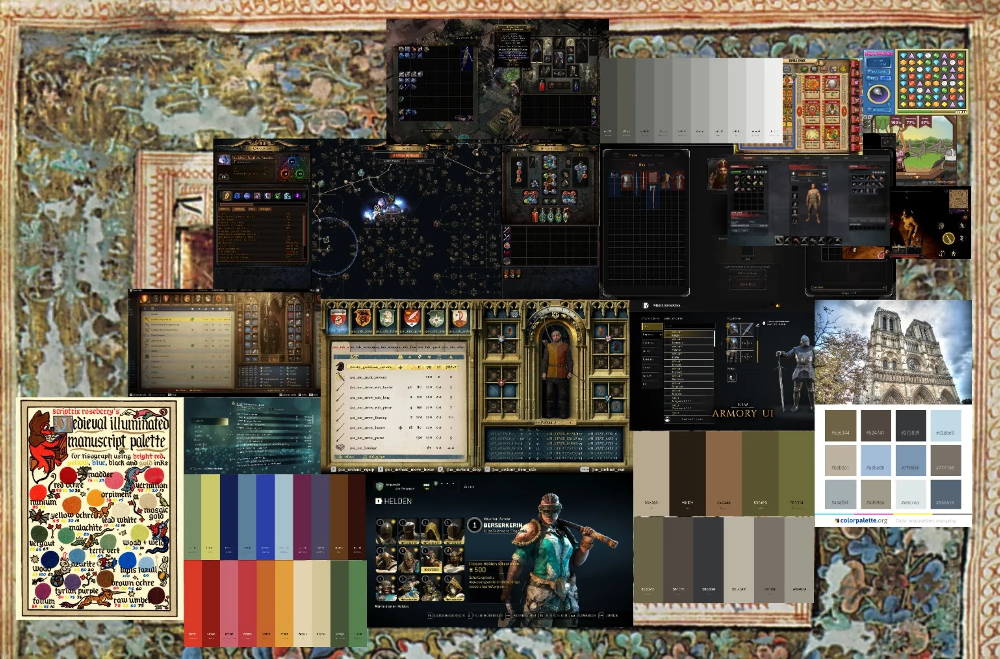
The moodboard. The game menus gave me structure. The manuscript inks and the weaving gave me color.
Plan
Style guide and palette
Every color in the UI comes off the moodboard. Warm greys handle structure. Earth tones handle surfaces and type. The bright jewel tones are saved for the jewels.
Plan
One frame for every screen
Before any art, I locked one frame for every screen. Player info sits in the top corners. Navigation sits in the bottom corners. The middle is for whatever that screen is about. So players never have to relearn where things are.
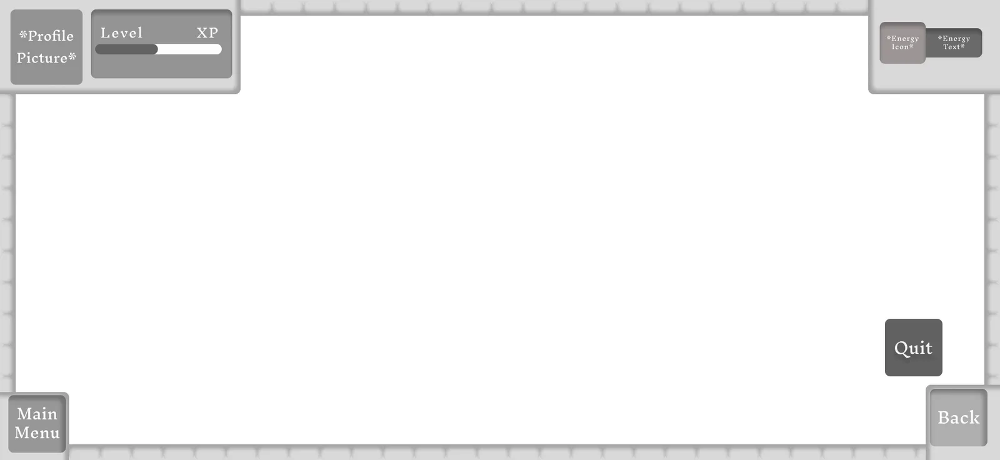
Art passGreybox frame
Who you are Portrait, level and XP. Same corner on every screen.
What you have Energy and coins, always in view.
Way home Main Menu is always bottom left.
Way back Back is always bottom right.
The screen's job The middle belongs to whatever this screen is for.
The frame with my notes. Every screen in the game is built inside it.
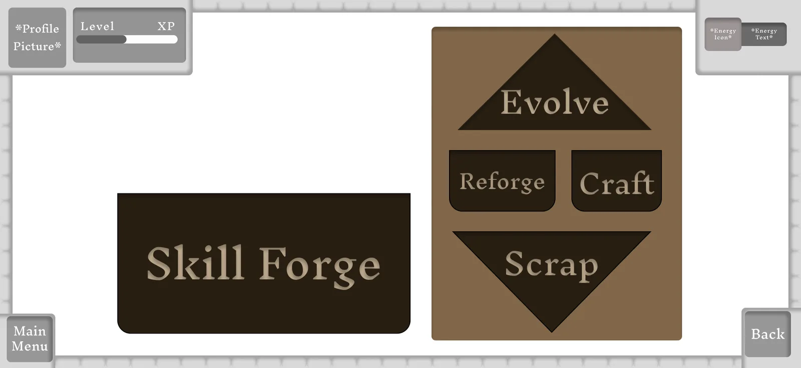
Up is better Evolve is a triangle pointing up.
Level is sideways Reforge and Craft sit flat in the middle.
Down is gone Scrap points down.
Skill Forge, first pass. I let the shapes carry the meaning.
Solution
Main menu art pass
Hover or tap a numbered pin to see why that part sits where it does.
01Who you arePortrait, level and XP stay pinned top left on every screen.
02What you haveEnergy and coins stay top right. So you always know what you can spend.
03One obvious next stepCampaign is the only big button, and it gets its own panel.
04Everything else, equalShops, Crafting, Book of Chains, Rewards and Quit share one row and one size.
05Out of the wayAudio and settings sit in the corners. Easy to reach and easy to ignore.
Iterate
Shop, forge and battle screens
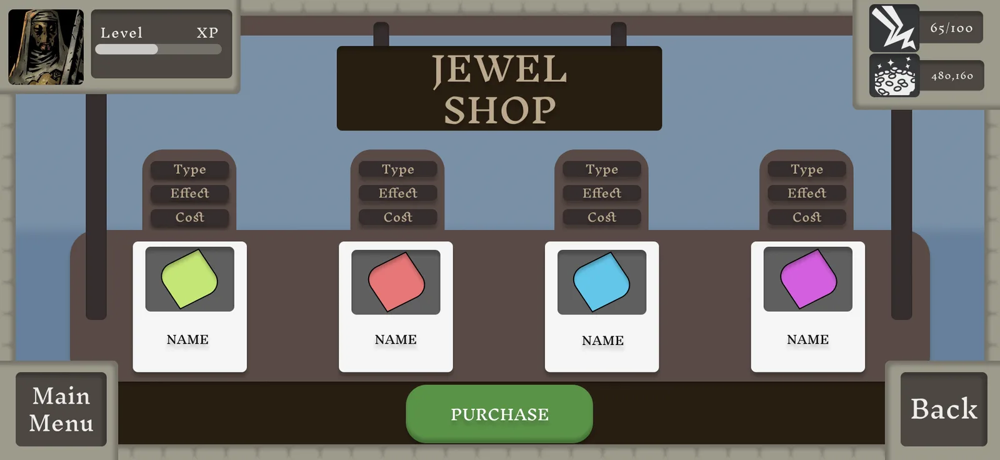
Same order every time Type, Effect and Cost stack the same way on every jewel.
One button Purchase is the only action on the screen.
Jewel Shop. Easy to compare, one thing to do.
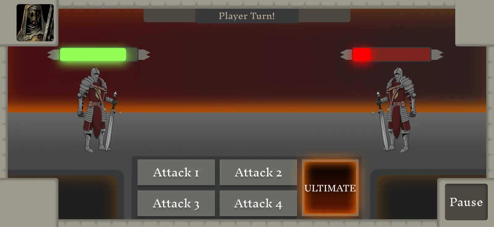
Whose turn A banner across the top says who acts.
Mirrored health You on the left, them on the right.
Save it for later The Ultimate glows, so it reads as special.
Battle. Everything you need for one turn.
Reflect
My story
What went well
It came together, and we got a great grade on it. It was all in Figma, and I learned a ton.
What was tricky
It was a small class in a hybrid setup, and we picked teams from whoever was there. It was an earlier-year class, so some classmates left the program partway through and attendance thinned out. Production lagged, tension went up, and the work landed unevenly. Another teammate and I ended up carrying a lot of it.
How I worked through it
I put my head down and got to the work. Newer UI + UX designers who aren't artists don't always catch the small stuff, like layout and kerning. That small stuff is what makes separate screens feel like one game.
What I'll carry forward
It was my first real look at team dynamics. A hybrid schedule let production slip, and the slip turned into tension and uneven work. I also learned when to stop waiting on people and just do it.
A Redline-inspired racing experience set in a post-apocalypse and broadcast on intergalactic TV. I created or directed all of the game's UI, from concept to build.
Role
Creative Director, UI + UX
Team
31 · the Grease Monkeys
Engine
Unreal Engine 5.5
SteamDecember 2026
AllUI art drawn by me, in vector
Problem
The original menu was the player's first look at the game, and it made the game look amateur. It was flat, static and unreadable: a blended camera over normal 2D UI in a graffiti font, with nothing that made you care about W-Dawg. We had no UI artists, and our two UI designers were stretched thin. The game was also drifting into a hodgepodge of personal and small-group projects.
My role
I was a level designer and producer. I dropped both, stepped up as Creative Director, and took over all of the UI and UI art.
Decision
With our art lead, I locked one concise style guide. Then I rebuilt the menu from scratch inside the game world. A camera director hard cuts between Level Sequences, and the buttons sit on 3D surfaces.
The original menu was flat, static and hard to read. It was a blended camera over normal 2D UI, set in a graffiti font with no thought for legibility. I didn't build it. At the time I was a level designer and one of the producers.
The menu is the player's first look at the game. Ours gave them no reason to care about W-Dawg, or to feel like him. It made the whole game read as amateur before the first race.
We had no UI artists. Our two UI designers were stretched thin. The one on the menu was mostly doing production, and the other was handling the in-game UI. And the game was slipping out of focus. It was turning into a hodgepodge of people's personal projects and small-group projects.
Dropped two rolesI gave up producing and level design to take on the UI full time.
Stepped up as Creative DirectorI held everyone to the same standard so the game read as one experience again.
One style guideI worked closely with our art lead to lock a concise, final style guide.
Rebuilt from scratchI recreated the menu to fit the original design intent and style.
Plan
A menu inside the game world
I wanted the menu to feel like you're already in the game. So I borrowed from the Batman Arkham menus. The camera cycles through shots on its own. It pulls you in and shows you the characters before your first race.
Racers up frontI want players attached to the racers before the first race, so the menu is built around them.
Solution
The first minute, in engine
My part was bringing the player into the story. The intro is the first thing anyone sees, so it had to show the game's attitude right away. My goal was to get our core design pillars across before the first race.
Each clip sits on top of the step it shows. The arrows are the transitions, labeled with what moves you along.
01
Intro
The team name lands in tire tracks. Then the camera drifts across the logo as W-Dawg tears past. It plays once, and holding a button skips it.
Automatic
02
Ready loop
W-Dawg circles the logo and waits. Nothing is asked of the player yet.
Any key
03
Any key
One press pulls the view back. The four options paint in around the logo.
Automatic
04
Main menu loop
Hover an option and it lights up in its racer's color. The rest stay grey, so the choice stands out.
Solution
Main menu in vector art
The look mixes vectordelia with Redline's cinematic style, on the white concrete of the menu world. The four options sit like a compass. Pick one to wake it up.
In engine W-Dawg drives the menu while each option is hovered.
Prep Ride
W-Dawg's cyan · 00FFFF
A splash panel with high scores, a highlight clip, the game name and team name. Then Racer Select, a flat holographic overlay with the racer's face, info, track record and a bit of lore. Then two flash transitions, one into the track intro and one into the race start.
Plain names wonWe wanted every option to have an esoteric, in-world name. It cost more usability than it gave back, so the menu says Settings and Credits. Only play and the lore bible keep garage names: Prep Ride and Pit Crew.
Two plates per optionEach option has a resting plate and a lit plate. Hovering swaps them, so the halftone, tire tracks and arrows burst out around the word.
Colors from the castCyan is W-Dawg, pink is Lo Quei, yellow is Donnie and Momo. Credits get green, a color no racer owns, because you've stepped outside their world.
Quitting is themed too. Leaving the game brings up a "Racer Retiring" confirmation.
Iterate
Settings etched into the car
In the Garage, settings are hotspots right on W-Dawg's car. One Return button sits on the ground, so you can see it as the camera whips around.
HoodVisualDisplay settings such as monitor size.
SideAccessibility + gameplayToggles like turning the HUD on or off.
Open trunkAudioVolume for each type of sound.
Drawovers, before and after
Where I started, and the drawover I made on top of it.
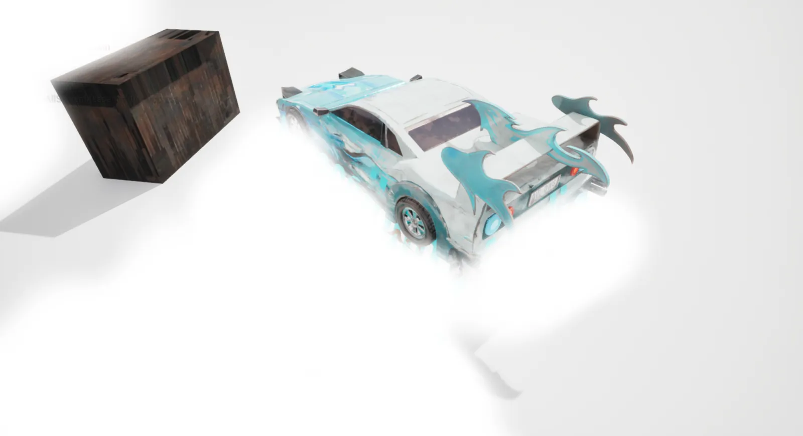
Before
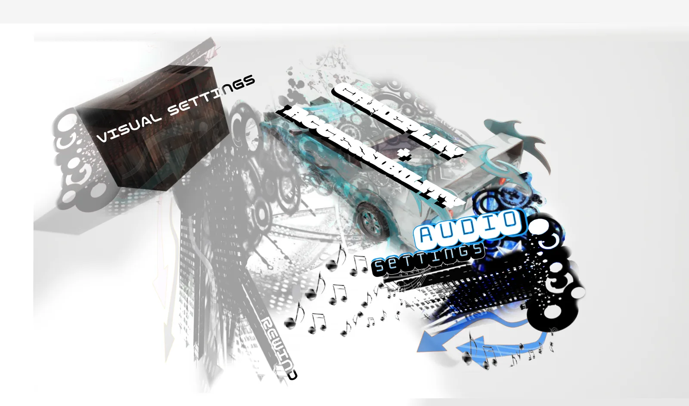
Original concept
Settings around the car The car in engine, then my original concept with labels for where each group of settings sits.
Build
How it's built in Unreal
I built the whole menu out of small, simple functions and data, so it scales. A new screen is a new row, not new code.
17menu buttons
8settings rows
20small director functions
69credit rows, built at runtime
Every screen is a rowOne Blueprint director holds every destination as a struct: its tag, its parent, its sequence and its buttons. Adding the three Garage hotspots took three rows and no new code.
One Back for everythingEach row knows its parent, so a single GoUp function handles Back on every screen, including loops and return sequences.
One input pathMouse raycasts, gamepad and keyboard all end in the same Interact call. One fix covers all three.
One interface, one materialEvery button and settings row talks to the director through one interface. Sliders are a single hologram material driven by one value. Credits and the Victory screen share one widget, fed by data tables.
Result
Production timeline
DoneSettings, Art Zoo and Audio Zoo
Base functionality is in for the Audio, Visual and Accessibility panels and both zoos.
DoneMenu and intro designed
Game plan, shot list and menu map, written from scratch.
DoneIntro and attract loop in engine
The Sequencer intro hands off to the menu loop.
NowLast polish push
Art passes on every screen.
Dec 2026Ships on Steam
The full team's release.
Context
A race you can't lose
Nitro Guzzler started when a teammate showed me Redline and we both said we had to make this game. That was heading into junior year. It went combat first, then racing, then art first, then mecha, then a Mad Max version where you could get out of the car. We landed on a vertical slice racing experience, built around what a team can really make: one level, in Death Valley.
The channelADDR, the Apocalypse Dimension Death Run. Think American Ninja Warrior across dimensions. Each racer gets sent into their own dimension partway through its apocalypse, just to show off.
You can only winYou play W-Dawg. Crash and the broadcast rewinds the whole world, because a wreck wouldn't look good to the audience. What you chase is the audience score and your rating.
You don't even driveYour AI girlfriend is the car, and she drives. You're the nepo baby of the intergalactic racing scene, and you get to revel in it.
Team
The team around the UI
Nitro Guzzler is made by the Grease Monkeys. The menu only works because of what the other departments build. Here's who the UI leans on.
LeadershipLeads and producers
The team runs on a lead and producer structure. Each department has a lead, and producers keep the schedule. The menu has to sell the game they're all building.
ArtArtists
They built the trailer shots. The Art Zoo entry on the main menu leads into a level that shows off their work.
AudioAudio
I handed them the full VO script and bark list. The settings menu gives each of their sound types its own volume control, and the Audio Zoo entry leads into a level built for their work.
EngineeringProgrammers
Most of the team works in C++. I build the menu logic in Blueprints on top of their systems.
Context
How AI was used
All of the art in Nitro Guzzler is human made.
AI was a tool during development, and I used it to further my education on the subject. I used it for bug fixing, for notes and secretary help, for compiling lists and for grammar checks on documents.
A roguelike shooter where the chip in your head draws your HUD and wants you dead, and drugs are how you fight it. I played up to the boss and took notes out loud. This page follows one system, the drugs, from how the game shows them to what a dose does to your run.
Horns of Deliverance belongs to its developer, schemesmith. I had no part in making it. Everything here is my read as a player, from my own recordings of one early access build.
Observe
Drugs against the chip
The chip draws your HUD, and it's counting down to your execution. Drugs are how you push back, and the chip's own HUD treats every dose like a crime.
The chip calls them contrabandYour drug inventory sits under a notice telling you to dispose of controlled substances right away. The same voice that counts your steps and sells you Premium is the one you're breaking.
A countdown sets the pressureThe HUD opens friendly, with good afternoon and no new notifications. Then it turns to one pending command, user execution, and a timer.
The chip fights backAs it loses its grip, its own panels scramble into smears of colored bars. The thing you're fighting breaks on screen.
The chip's HUD Countdown, ad, step counter and ammo permit, all talking at once.
Problem
Taking a dose
Press Q and your character lifts the item up to their face. You see the pill or the mushroom as a thing in your hand before you see it as a choice. That gives a dose weight. But the menu only shows up after the animation, about a second later.
That wait made me want to hold Q. Holding Q takes the item right away. So my instinct to wait for the menu became an accidental dose. To pick a different one I had to scroll and press F to confirm, all while shooting.
A wrong press changes what you see for the rest of the level. That makes this the one input that most needs to be safe.
Show the menu the moment Q goes down, and keep the lift as the animation behind it.
Let scrolling do the selecting. No confirm press in the middle of a fight.
Give taking a dose its own deliberate input, so waiting can never trigger it.
The lift The item comes up to your face first. The menu waits for it.
Observe
What a dose does
Each drug changes what you see and how you find the exit. The controls stay the same the whole time.
MushroomsDose not notedA psychedelic dream state. Working servers light up and winged enemies show up to shoot. You follow glowing orbs to the exit, and aiming down sights pulls the view back into focus.Mixing pillsTwo at onceYour character falls into a depressive episode. The screen datamoshes, red text says you're going the wrong way and that they've stolen your future, and the level turns into a maze.Edges onlyTrigger unclearThe room flattens into red and cyan outlines. I'm not sure what set it off.DelirantsA few bumpsThe world drains to black and white, and a trail of blood on the floor leads you to the objective. That worked on me better than an arrow did.Party PowderDose not notedA huge floating arrow appears over your head and points down the right path.OverdoseToo much of anythingThe world pixelates until you can't read it.
What it does to the run
More use, more healingEach dose heals you, and the heal grows the more you use.
A harder tripEvery reuse makes the trip heavier and raises the difficulty. The heal and the danger go up together.
ToleranceStay on one drug because you like how it plays and you'll slowly need more of it. So I kept switching.
Random pickupsYou can't plan around a favorite. You take what the run hands you, and each switch means new rules for reading the level.
Controls stay putEvery effect lands on sight and navigation. The thing you relearn is the level.
ThresholdsDelirants take a few bumps before the color drains. Too much of anything and you overdose.
MixingTwo pills at once give you a worse state with its own rules, and a maze for a level.
Wayfinding swapsOrbs, blood, a giant arrow, a maze. The exit stays the goal and the way you read it keeps changing.
A way to cut throughAiming down sights pulls the trip into focus for a second, right when you need to land a shot.
BlurVision blurs a lot, which made sniping hard. I'd rather the game pull focus. A focus shift feels like your body. A blur feels like a filter laid on top.
Analyze
Why it still holds together
Sometimes taking playability away expands an experience. This game goes further. It rug-pulls the game out from under you. Keeping the control scheme is the only way I can see to keep that cohesive. It's still the same game, with the same goals.
The extremes only work because the base game is simple. That's not an excuse. The game chose it. The core systems run on simple heuristics, so the player has cognitive load to spare when the screen falls apart.
And every effect makes sense in the story. Any game can take notes on building systems that are this narratively understandable. Even through obstacles that would normally be obtuse and frustrating, there's still a playable game underneath.
Analyze
How it gamifies drug use
There's no buff bar or timer for a high. You feel it through your eyes, while the numbers move underneath. It plays a lot like real use, written as rules.
The reward is healing that grows with every dose, and a push back against the chip.
The cost is a harder trip each time, which makes the whole game harder, and your read on the level.
Tolerance means comfort runs out. The drug you like stops being enough.
Random supply means you can't settle. You adapt to whatever you find.
The gamble is mixing, with the worst state in the game as the downside.
The framing never lets up. The HUD calls every dose contraband the whole time you depend on it.
The game also asks before any of this hits the screen. A Standard or No Visuals choice comes right after the content warnings.
Takeaway
What I'd take and what I'd leave
What I'd take into my own work:
States that change how you find your way while the controls stay the same.
Datamosh, pixelation and loss of focus as feedback for what a character is going through.
Mixing as a new state with its own rules.
A reward and a cost that rise together, so using more always costs something.
Tolerance that pushes players off their favorite playstyle.
A HUD voice that frames the mechanic, like the chip calling your drugs contraband.
Wayfinding from things in the world, like blood, before arrows.
A choice about heavy visual effects before the first run.
What I'd leave or change:
A delay between a button press and its menu.
Holding a button to use, when holding is also how a player waits.
A confirm press while the player is fighting.
Long sentences where a fighting player needs a glance.
Blur where a focus shift would say more.
Reflect
My story
What went well
Talking out loud while I played caught reactions I would have lost by writing afterward.
What was tricky
Telling taste apart from usability. The glass HUD is a taste call. The Q menu delay is a usability problem.
How I worked through it
I wrote each note the same way: what the game does, what I felt, and what I'd do. Then I checked my notes against the recording.
What I'll carry forward
How much I can get away with. Game feel can survive a lot, as long as it's designed for that from the very start.
A solo, first-person combat feel and HUD project. You're in a coma, trapped inside a corporate chip, reliving your ancestor's fight against French invaders on Mohawk land in the winter of 1666. You have a bow and a murder of crows you've trained to hunt with. On your own land you're calm and at home, a predator. The invaders are cold, scared and unsure what to do.
Role
Everything
Team
Solo
Engine
Unreal Engine 5
Built
2 attack modes × 3 levels
Goal
Make it feel like a finished game. Hit reactions, camera shake, VFX, sound and the HUD all had to feel shipped, across three levels of every attack and three levels of getting hit.
Problem
Testers couldn't see through the crosshair to the target. The arrow count read like any shooter's ammo, and getting hit blended into the snow.
My role
Everything. Solo, in Unreal Engine 5.
Decision
I treated each level as its own feel pass, with its own hit reaction, camera shake, VFX and sound. Then I sorted testers' notes into what I could act on and what was too much for the time. The biggest change was the crosshair. The feather fan became the cooldown too, one plume per ability level. Sound got priority over polish.
All three levels of both attacks worked, each with its own sound, VFX and art, and the TA called out the audio. The HUD's functionality came last and wasn't working in the graded build. That's the scope lesson.
Overview
Sneak Peek
What I built
Two attack modes, a bow and a murder of crows, with three levels each. Plus three levels of getting hit. Solo in Unreal Engine 5, from VFX and UI to animation, audio and code.
You're stuck in a corporate fever dream, so the HUD is high contrast against the snow, with soft edges that blur clean information into something dreamlike. Feathers stand for the crows, flint heads stand for your arrows, and your health is a fluid trapped in a container.
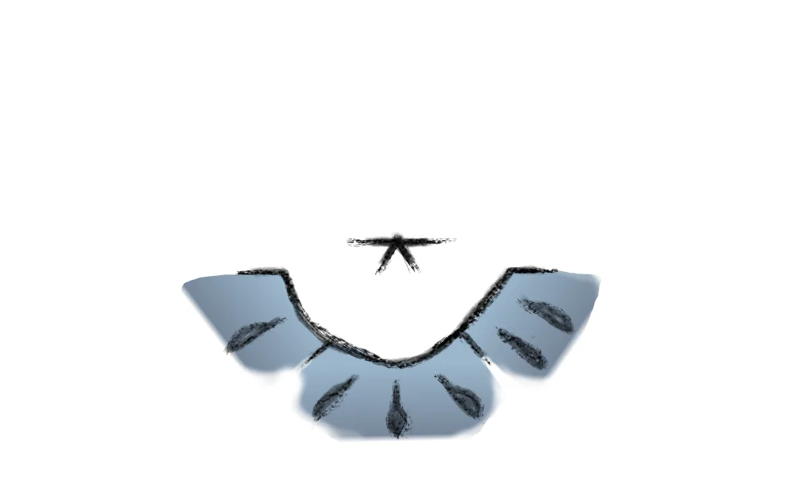
Three plumes One section for each ability level. Each one shows its own cooldown.
The aim point A small dark star sits above the fan.
The final crosshair. The three plume sections show the cooldown for each level of ability.
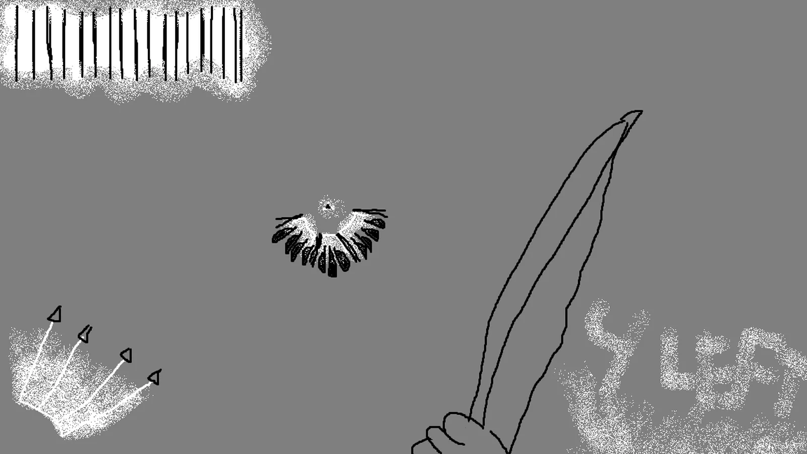
Soul fluid Your health, trapped in a container.
Tight in bow mode The lines stretch out as you draw and show the level with a glowing arc.
Flint heads Arrows left, shown as arrowheads.
The count A smudged number. Playtesters said it read like regular ammo.
Bow mode wireframe.
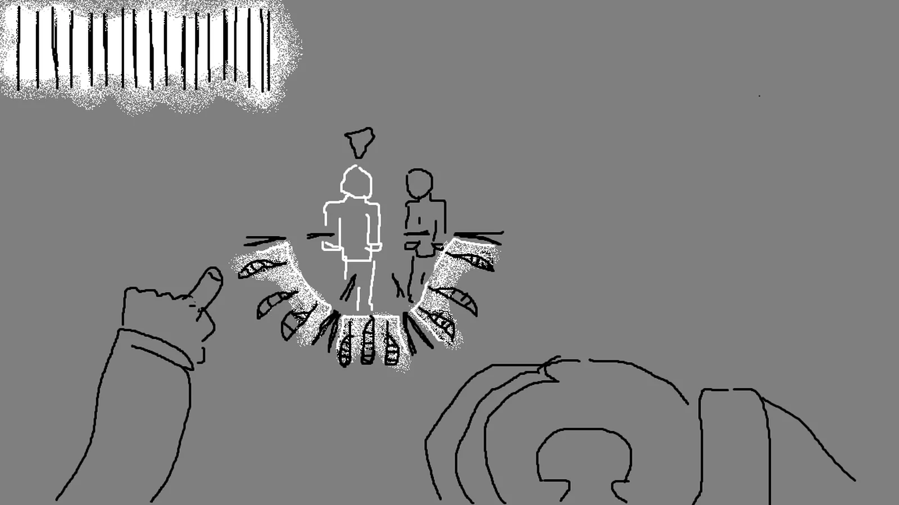
Feathers open The fan spreads around the target and glows for the level you picked.
Marked The target gets a white outline and a beak points at them from above.
Point to send Your hand comes up. On heavy, the bow goes away and both hands point.
Crow mode wireframe.
Build
Three levels of attack and damage
There are two attack modes, and you switch between them like weapons. Each mode has a light, medium and heavy version, and each version had to look, sound and hit differently. The bow should feel heavy and lethal, like one shot is enough. The crows are a whistle and a point, then something brutal.
Light
LookA thin smoke trail
SoundA soft "fff" and a flat bow snap
HitHalf damage, short arc
HUDArrow count ticks down
Medium
LookAn air trail with a faint glow
SoundGrip tightens, a breath in, then a clean release
HitFull damage, longer arc
CameraThe sight holds up a beat, ready for the next shot
Heavy
LookA thin, bright glowing trail
SoundTight grip, big snap, a whiz in the air, then a thunk
HitPierces, flies straight
CameraFocuses in, then snaps back out with a pale blue vignette
Light
LookFeathers and flashes of ravens, the target glows
SoundOne short whistle, feathers fluffing, curses
HitThe enemy thrashes at the air
HandsOne hand comes up to point
Medium
LookAdds bright blue slashes
SoundTwo whistles, cawing, slicing
HitThe enemy drops to their knees, then falls
HandsThe point holds for a second
Heavy
LookA black feather tornado over everyone in a glowing circle
SoundOne raven call, then all of it on everyone
HitEvery enemy in the circle goes down
HandsThe bow goes away and both hands point
Light
LookExposure up, blue vignette
SoundA blade swipe
CameraSlight sway, wider FOV
HUDEverything shakes and blinks
Medium
LookDesaturated and overexposed
SoundThe world goes quiet, crows and snowfall get louder, a low ring
BodyYou slow down
HUDBlinks faster, with blue streaks of light
Heavy
LookAn instant white screen
SoundA heavy bang, then a high ring that fades into chanting
CameraNothing. It just stops
HUDNothing
In engine
The draw The heavy bow comes up and the feather crosshair closes on the target.Taking their soul Each hit drains the soldier toward white, so damage reads on the enemy itself.The kill One last shot and he folds into the snow.
Getting hurt is cold. You're freezing, slipping deeper into the coma. A heavy hit doesn't shake the camera at all. It just goes white, rings, and fades into chanting.
Crow special VFX
Level 1 No slash. The crows harass the target, an annoying debuff.Level 2 One slash.Level 3 Multiple vicious slashes.
The three crow-special Niagara systems in Unreal's preview, light to large. In the build, the larger levels spawned too small and the on-hit call broke, so these show the VFX as designed.
Plan
HUD feedback in four beats
I planned each HUD element as four beats. Something grabs your attention, something signals the change, the change happens, and it settles.
Health
Soul fluid in a container, top left
AttractA splashy slash sound. Exposure jumps and a white vignette hits.
SignalThe fluid flashes with extra glow.
UpdateThe lost part greys out and wisps away like smoke.
ResolveThe fluid settles, sloshing in a smaller space.
Enemy health
Drawn right on their body
AttractThey grunt and react to the thunk of the arrow.
SignalAn outline appears on them.
UpdateA glowing white overlay fills them as they get "consumed by damage."
ResolveBelow half, they switch to a damaged state.
Arrows
Flint heads, bottom left
AttractThe bow drops as the arrow leaves with its trail.
SignalOne glowing arrowhead leaves and the rest shift over.
UpdateA reload "cathunk."
ResolveThe bow comes back up.
Cooldown
The plumes on the crosshair
AttractThe feathers glow for the level you picked and shake as the target gets marked.
SignalWisps escape the glow.
UpdateThe feathers go black and the glow drains into grey smoke.
ResolveThe smoke clears and the glow slowly charges back up.
From Prof. Cagle: give it a signifier when it hits full power, like a sound or a flash.
Test
Audience testing
Before and during early production I ran qualitative sessions, closer to the audience testing and polling studios do before they commit to a game. I presented the pitch and early builds to artists, level designers, UX designers and people who'd never played Assassin's Creed or Far Cry, and polled how it felt. More playtests came later, once there was more to play. The aesthetic landed early. Most of the notes were about the HUD.
"It is very you. Which is good because that means you know how it should be."
"Ancient dark feel."
"Very blue! Dreamy!"
"He noticed me!"
"Doesn't look unfinished."
"Feels cold. Sounds cold."
What I took from it
Crosshair too bigTwo testers said they couldn't see through it to the target.
Numbers read as ammo"Numbers are too traditional ammo theming." Arrows left should be silhouettes.
Health blends inIt needs a tint when you're hit so it pops off the snow.
Draw like a bowstringFor the heavy shot, pull the FOV back as you draw and snap it forward on release.
Sound first"Biggest sound for the bow is that dead air whoosh thunk next to your ear." Crow calls blend into the arrow's whistle.
Lean into the clashTesters couldn't tell if the HUD was a visor or in your head. So the answer was to blur that line even more. Mix the fog with static.
Enhshahtén:ti is a tribute. It leans a lot on Assassin's Creed III and Connor, Ratonhnhaké:ton, from years of watching my older cousins play it. A little Severance went in too, in the idea that it's all in your head and they're testing you. The bow comes from Far Cry Primal, because its draw felt so good.
The feel comes from my own time outdoors. I've gone out alone or with the dogs and lived along a river for a few days. That feeling of knowing the land and moving on it like a predator is what I wanted to build, along with the quiet moments in stealth action games where you just take in the world.
01What went well
The core design held up. From the first pitch to the final build I barely had to iterate on it. The look I was chasing landed too. People called it dreamy, cold and ethereal, which is exactly where I was aiming.
All three levels of both attacks worked, each with its own custom sound, VFX and art. Damage reads on the enemy itself. As you hit them, their soul fills up and you take it. And watching a tester yell "He noticed me!" told me the enemy behavior was reading.
02What was tricky
Scope, and everyone knew it. Prof. Cagle's first notes on the pitch said it was overscoped, and he warned me the bow would take way more time than I thought. I pushed anyway because I loved the idea. I designed far past the brief: the story, the who and the why, the environment, the snow, the quiet moments. The end turned into a huge push and a crunch.
Some of it didn't make it.
The final UI animations never went in.
The crow VFX graded well but broke in the build.
The build crashed the morning of grading, and I had to fall back to my older submission.
The rest held up on its own, so I still got a good grade.
I also got ahead of myself. Every time I finished a system or a section, I gave it an art pass right away, before other areas even worked. I did that on purpose. There's psychology research suggesting that when a project looks good early, you like it more and want to keep working on it. It did keep me motivated. But it spent time the functionality needed.
03What I worked through
The brief was about feedback. The template we were given was hard to work with, though, so real feedback meant building the functionality too. It was practice for studio work, fitting into someone else's template and design patterns, even ones I didn't fully understand yet. I also cut the war hatchet I'd planned, since the brief didn't ask for it, and put that time into the three levels.
I sorted every test note into what I could act on and what was way too much for the time I had. The biggest change was the crosshair. The feather fan became the cooldown too, with one plume for each ability level, so the thing you aim with tells you what's ready.
With no team to hand things to, I had to pick my battles. Sound got priority, because a playtester was right. It can look rough as long as it sounds like it's tearing through the air. That showed in review, where the TA called out the audio work.
04What I'll carry forward
I don't have to carry all of it. Even on a simple project I can choose to simplify, and spend the early design time on what the brief needs and leave the world for later.
Next project, every system works before any of them gets pretty. Early art can still happen as one timeboxed pass.
And the UI goes in early, even if it's ugly. I spent this project planning to focus on UI and ended up doing it last. Next time the HUD works first, so testers react to the real thing.
Research mood boards
Each board answers a different question. Click any board to see it bigger.
Board 01
Style
How should the whole thing look? It leans on the Animus from the first Assassin's Creed, which is also a corporate machine you're trapped in. Misty whites, blue greys and grid lines. The palette strip at the top became the UI palette.
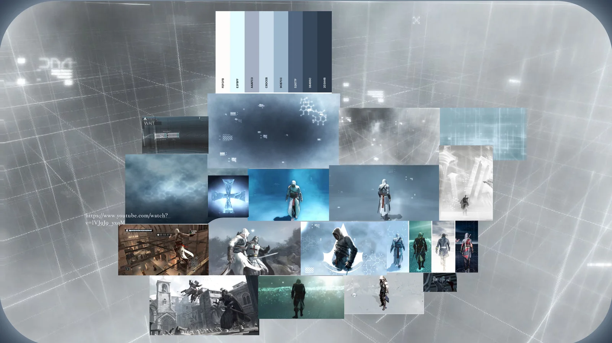
Board 02
Physical Weapon
Hunter's Bow and Wahjawe:e
What do you hold? A heavy Mohawk war bow with flint-tipped arrows, and tomahawks. From Far Cry Primal I took the weight of the draw. Its loose reticle I left behind.
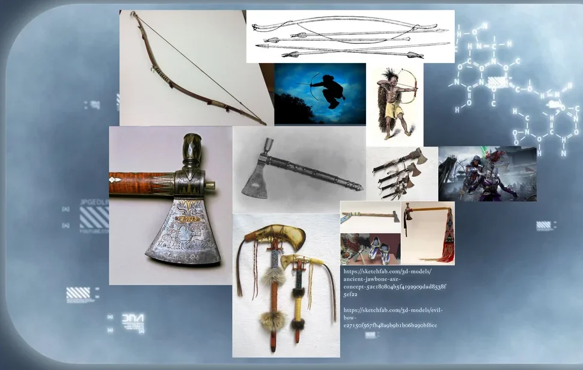
Board 03
Power
Call of the Murder
What does your power feel like? Crows, and the dark figures who command them. From Assassin's Creed Revelations I took the stacks of summoned attackers. From Far Cry Primal's owl, the dive attack. I didn't want a summon that gets in your way.
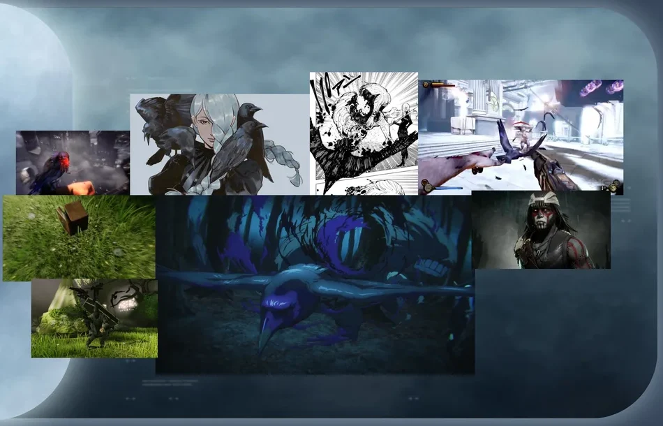
Plan
HUD and world palettes
The HUD lives in strict blue greys. The greys in the middle are for near misses and hits. Grey fits a world where you're freezing and losing consciousness. The blues stand out against the reds, yellows and tans of the French soldiers, and against the deep cool tones of the winter forest.
HUD
Environment
Result
Faculty review
"This is a really interesting theme that I want you to lean into as hard as possible. Good references. … Your HUD concepting is super solid and, honestly, makes this project one that I'm excited to see how it gets implemented."
"Great setting and good starting ambience. Animation when enemy notices you is great, small SFX with every attack. … Arrows sticking out is a good touch. … Camera shake is good. … Lots of good use with audio work."
Case study · Inventory redesign · Showcased at Mojang
MC UI Redesign
A redesign of the Minecraft inventory screen, made as my final for a UX class. The professor is a lead UI designer at Mojang. The top three projects from each section were shown at Mojang while they were working on their own UI and HUD redesigns. Mine won and was showcased there.
Minecraft's UI isn't keeping up with how much happens in survival, or with how many blocks are in the game now.
Players run out of room. When you're building, you're limited to what fits. In combat, you can't keep every tool you need at hand. My rule going in was to add function and keep the simplicity players already like about it.
The Young ExplorerNewer to games, learned by watching older siblings, plays default survival. A small inventory and not much know-how can leave them overwhelmed. Sorting helps them find things, and backup equipment keeps them alive in longer fights.
The Hardcore SurvivalistPlays for hard feats and clutches, and leans on mods because vanilla doesn't help enough. They want less time sorting and digging for gear mid-fight, and a way to dump junk without a trip back to the lava at base.
Research
Research
I sorted about 50 posts by hand. It's a sample I coded myself, not a formal survey, but the themes were clear.
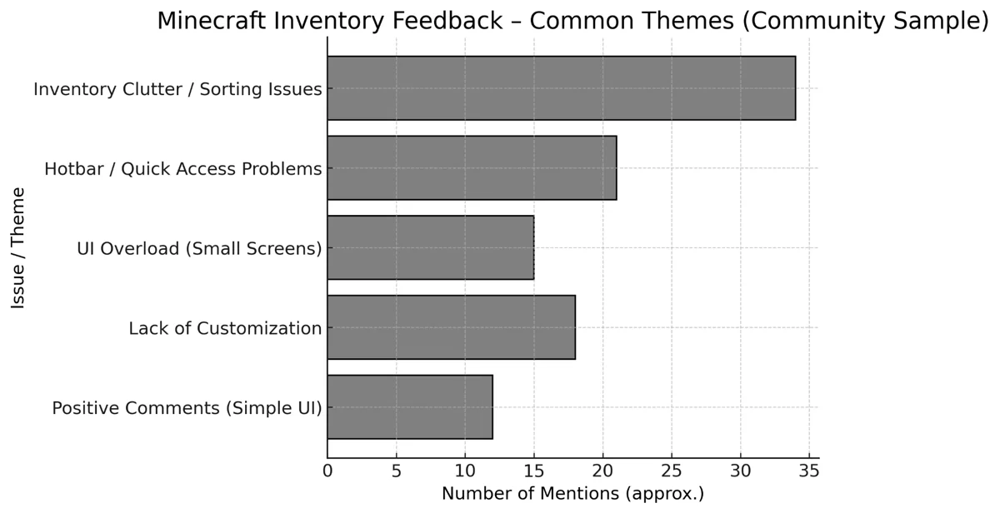
Clutter and sorting came up most, then the hotbar. Some posts praised how simple the UI already is, so that had to survive.
TerrariaClear sections for crafting, inventory and equipment, plus UI scale options. It gets cluttered with lots of items and runs small on consoles.
StarboundA second layer of hotbar slots gives more quick access. Fonts run small on TVs, and new players can find it a lot.
LEGO WorldsBig, friendly icons grouped by tool. Some icons have no labels, so players can't tell what they do.
Vintage StorySeveral inventory windows open at once, with drag and drop and stack splitting. Deep, with a steep learning curve and some scaling problems.
What I took from them: more quick-access slots, grouped tools and room to manage items, without the clutter or unlabeled icons.
Plan
Flat wireframe
Autosort Each click sorts again, rotating through alphabetical, color and item type.
Trash Drag an item in. Dropping the next one on top asks you to confirm.
Auto-replace The four diamond slots hold backup gear, linked to hotbar slots 1 to 4. When a tool breaks, the next one drops in. Mining, it saves time. In combat, it can save your life.
Two hotbars This button or a hotkey swaps between two hotbars, and the hotbar shows which one is up.
The flat wireframe with my notes. The panel sits closer together, fits more slots and keeps the 1 to 9 hotbar the same size.
Test
Wireframe over the live game
I turned down the opacity of the inventory and the HUD on purpose. You can still see the world while your menu is open, so a creeper can't sneak up on you while you sort. The look and sizing stay close to Minecraft's own assets, so it still reads as Minecraft.
The wireframe as a see-through panel over the world.
Iterate
Next
Playtest new spots for the buttons, more inventory slots, and an even more compact version.
Reveal it to a bigger group than the playtesters to get more data.
Polish whatever wins up to the Minecraft standard.
![Greyscale inventory wireframe. Top left, a column of four armor slots beside a large dark character preview. Top right, a two by two crafting grid joined by a line to one output slot. Below, a row of four buttons: a blank slot, a green recipe book, an ABC text icon and a salmon colored square. Then three rows of ten storage slots, a row of nine, and a lighter bottom row of nine. Diamond markers on four slots in the third row connect by vertical lines to the first four slots of the bottom row. A small node icon sits at the bottom right.](img/mc-wireframe.webp)